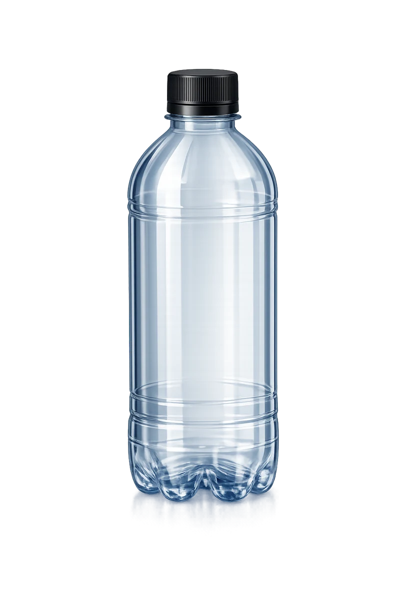
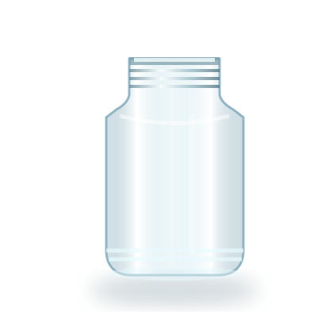
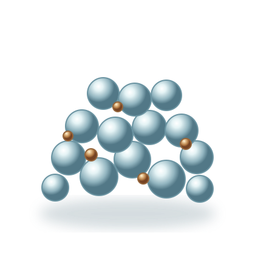
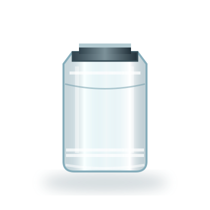
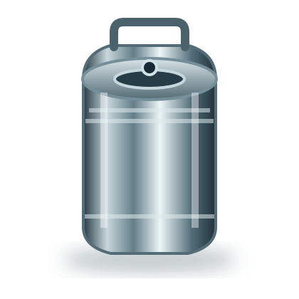
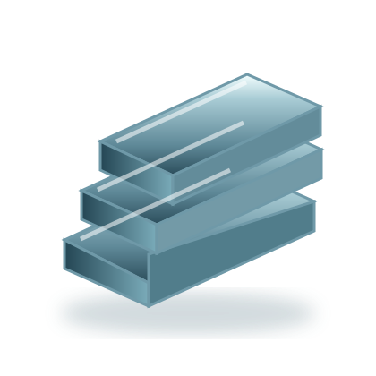

ПЭТ — материал
Полиэтилентерефталат — термопластичный полиэфир, который широко применяют для изготовления бутылок, банок, преформ и упаковки.
ПЭТ-преформы, бутылки, банки, полимерная тара и гранулы. Помогаем подобрать продукцию под требования пищевого, химического и других производств.

Два направления компании в одном интерактивном пространстве: полимерные материалы и напитки «Русский Квас». Выбирайте этапы, изучайте схему и переходите к нужной продукции.
Начать экскурсию ↗Преформы и готовая ПЭТ-тара, полимерное сырьё и специальные решения. Точные параметры конкретной позиции согласуем при запросе.
Заготовки для последующего выдува бутылок и другой ПЭТ-упаковки.

Бутылки, банки, флаконы и пластиковая упаковка разных форматов.
Перейти в каталог ↗ 03 / СЫРЬЁПолимерное сырьё для дальнейшей переработки и производственных задач.

Упаковка для пищевых, химических и других промышленных продуктов.

Специализированная тара и сопутствующие элементы — параметры уточняются.

Рассмотрим чертёж, эскиз и требования к будущему пластиковому изделию.

ПЭТ и другие полимерные материалы применяются для производства заготовок и упаковки. Важны не только форма изделия, но и характеристики сырья, назначение и условия дальнейшего использования.
Термопласты при нагревании переходят в вязкотекучее состояние, а при охлаждении снова твердеют. Это свойство используют при формовании изделий в пресс-формах.
Полиэтилентерефталат — термопластичный полиэфир, который широко применяют для изготовления бутылок, банок, преформ и упаковки.
Компания работает с первичным и вторичным сырьём. Возможность применения вторичного материала зависит от назначения изделия и согласованных требований.
Для выбора материала важны контактная среда, температура, механическая нагрузка, прозрачность и требования к упаковке.
Полимерные гранулы загружают в бункер. Из него материал поступает в нагревательный цилиндр машины.
Хлебный квас, напитки и форматы для розницы и профессионального розлива. В линейке представлены фильтрованный пастеризованный и квас живого брожения, лимонад, морс и «РусКола».
ООО «Новая Реальность» зарегистрировано 3 ноября 2023 года и работает в сфере производства полимерных материалов и изделий. Основной код ОКВЭД — 22.21.
В ассортиментных направлениях компании — ПЭТ-преформы, полимерная упаковка и ПЭТ-гранулы. Состав сырья, характеристики и назначение конкретной позиции согласуются отдельно.
Контакты и реквизиты →Оставьте номер телефона и описание задачи — обсудим детали с менеджером.